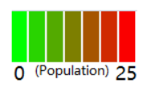
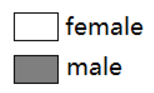

Age from 15-19 is a special group as it includes non-adults and young adults. It must be hard of them to take care of their own children both financially and mentally. From 2011-2016. Most areas that has an increasing rate for male locate at Eastern edge of unsw such as Sydney and Canberra or central Coast. Sydney, Hunter’s hill with has the highest increasing rate - 266.67%. For female the areas are more dispersive. The largest also locate in Sydney with increasing rate - 233.33%. The largest number will be 88. It is much higher than male which is only 20. For this age groups, the numbers of female that provide unpaid childcare is much higher than male do in each area. However, from 2011-2016, there are more areas has an decreasing rate for female than male.

